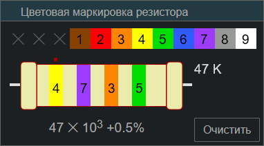

SpiderBasic, Андроид
Color_marking_resistor
Назначение
Определение сопротивления резистора по цветовой кодировке.

Взаимосвязанные
Color_marking_resistorОписание
Кликнуть на цвет, при этом изменяется внешний вид резистора и вычисляется сопротивление